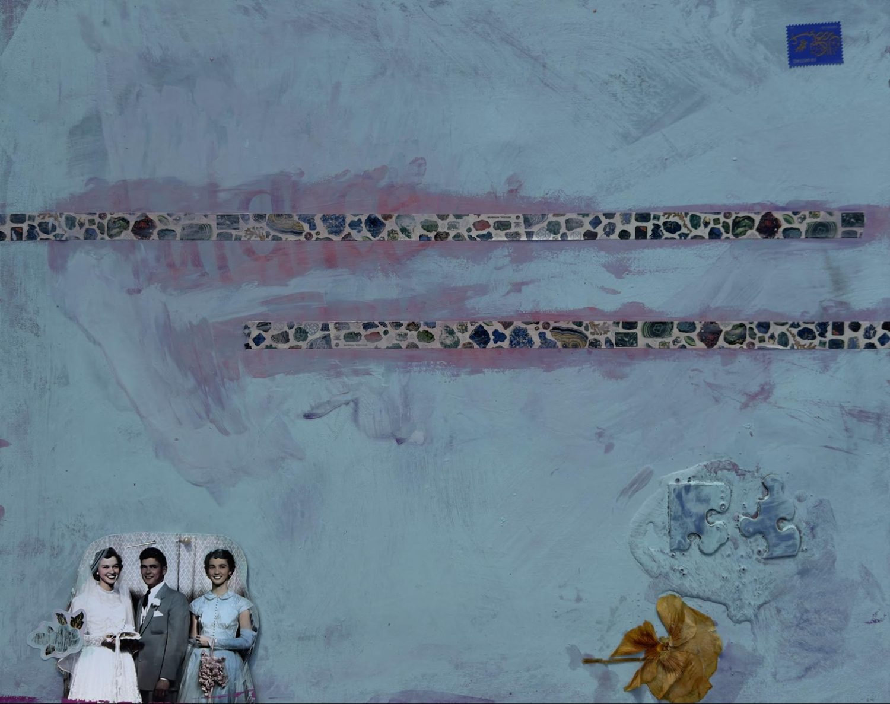
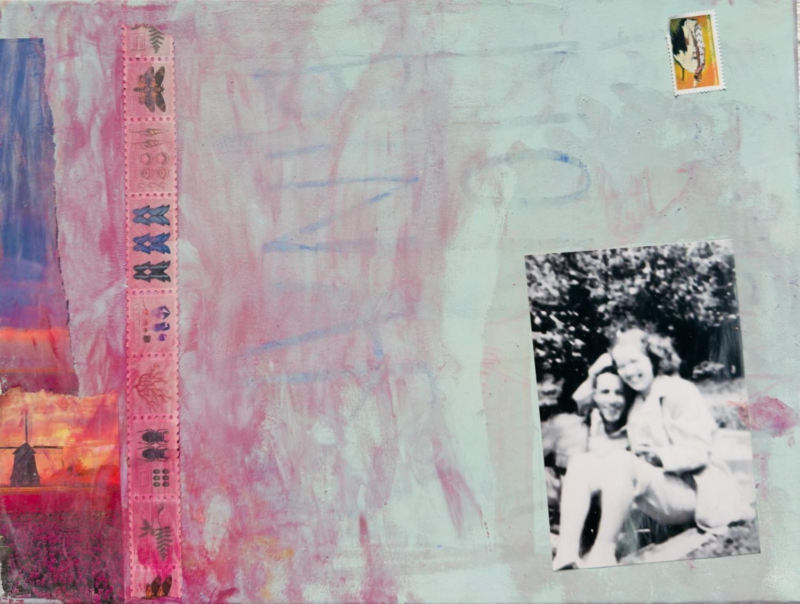
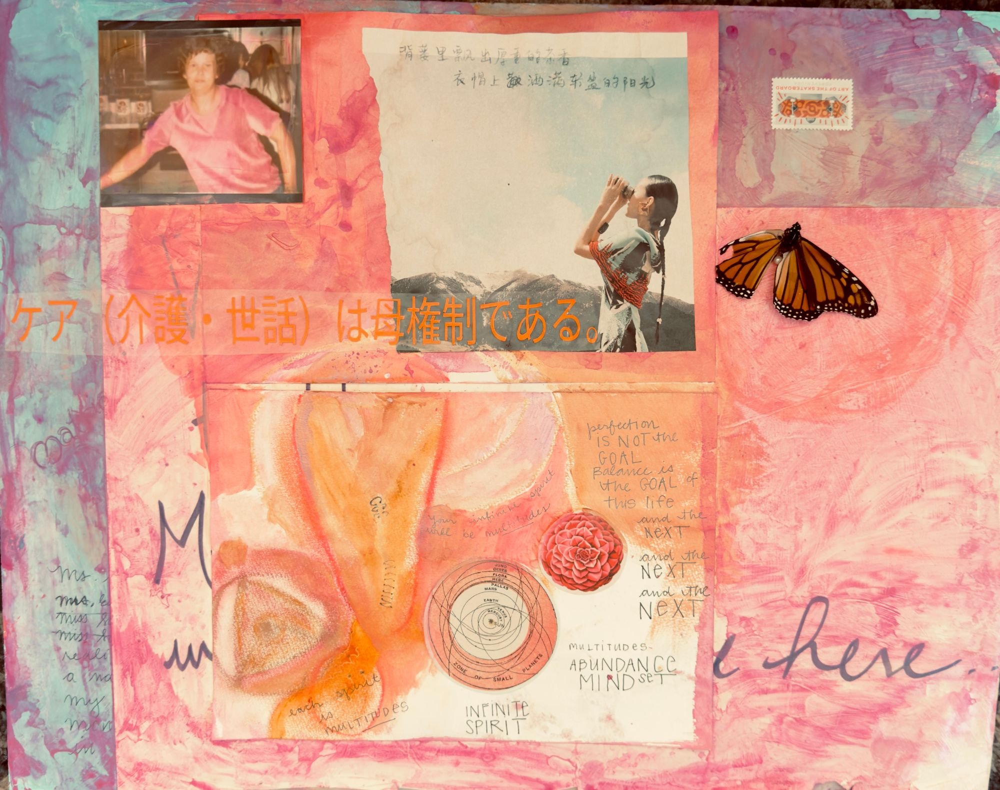
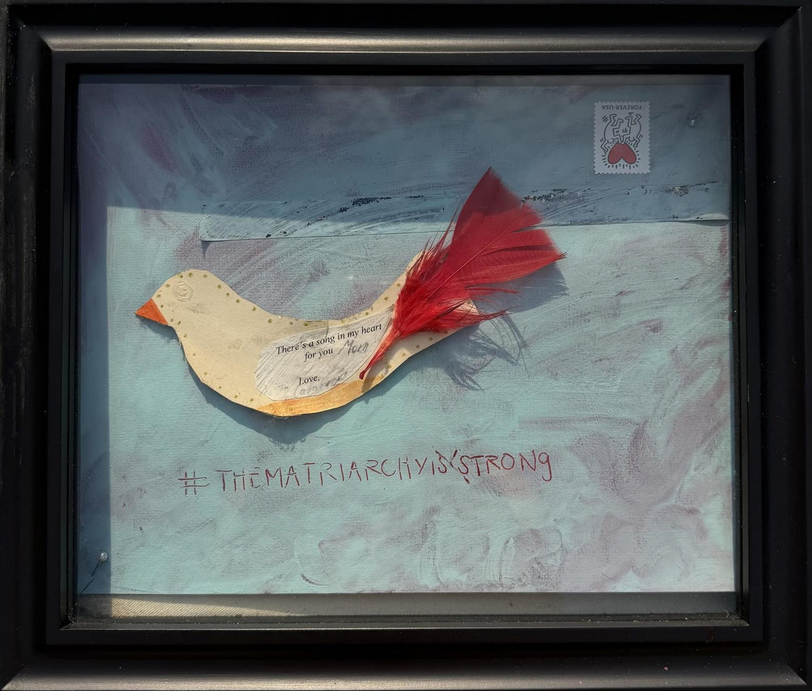
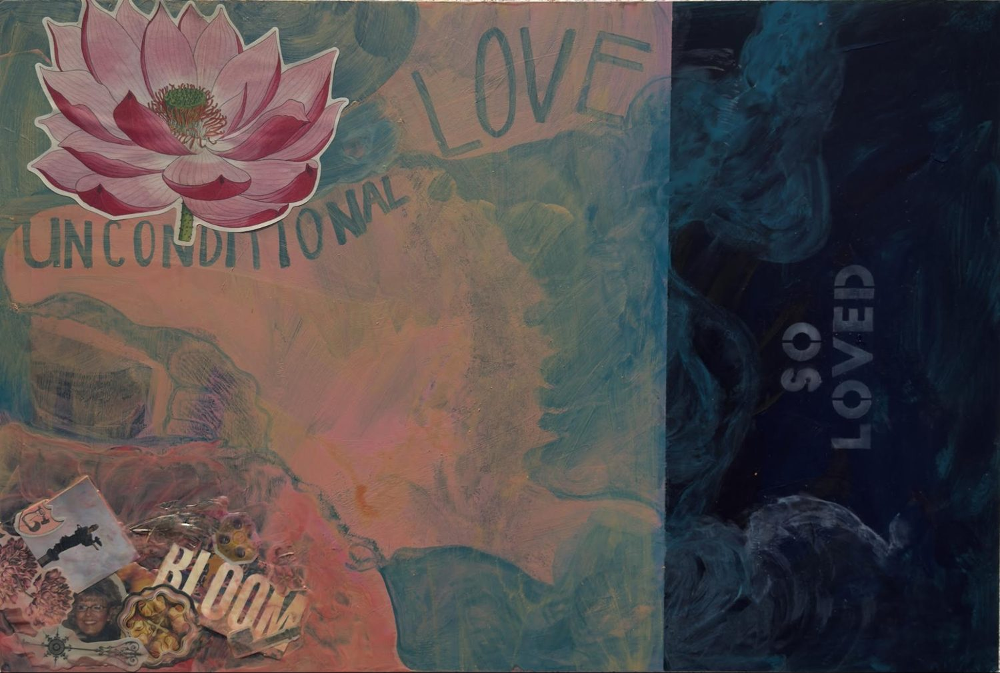
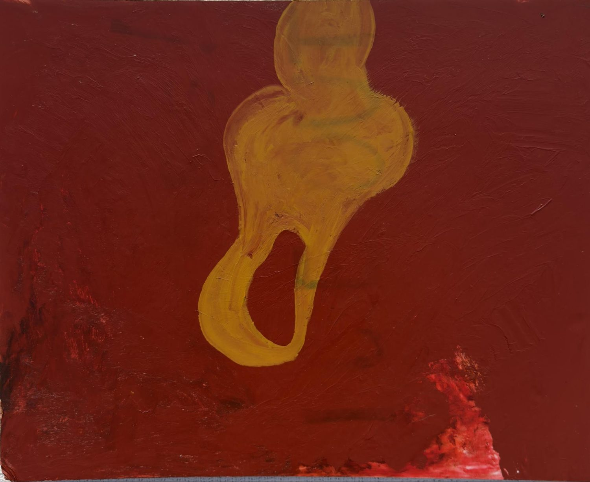
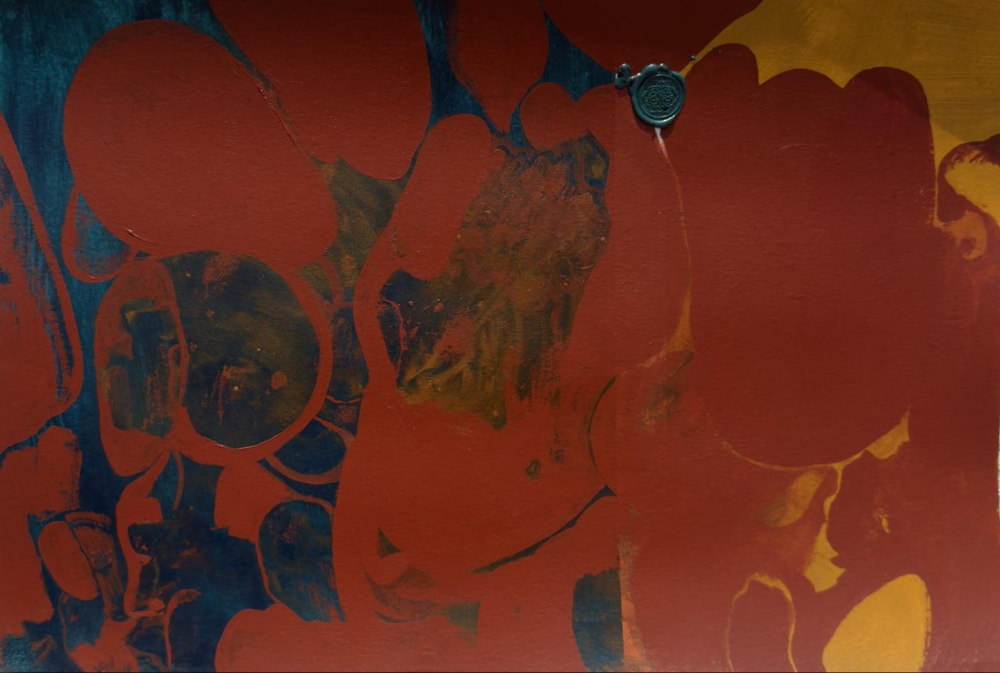
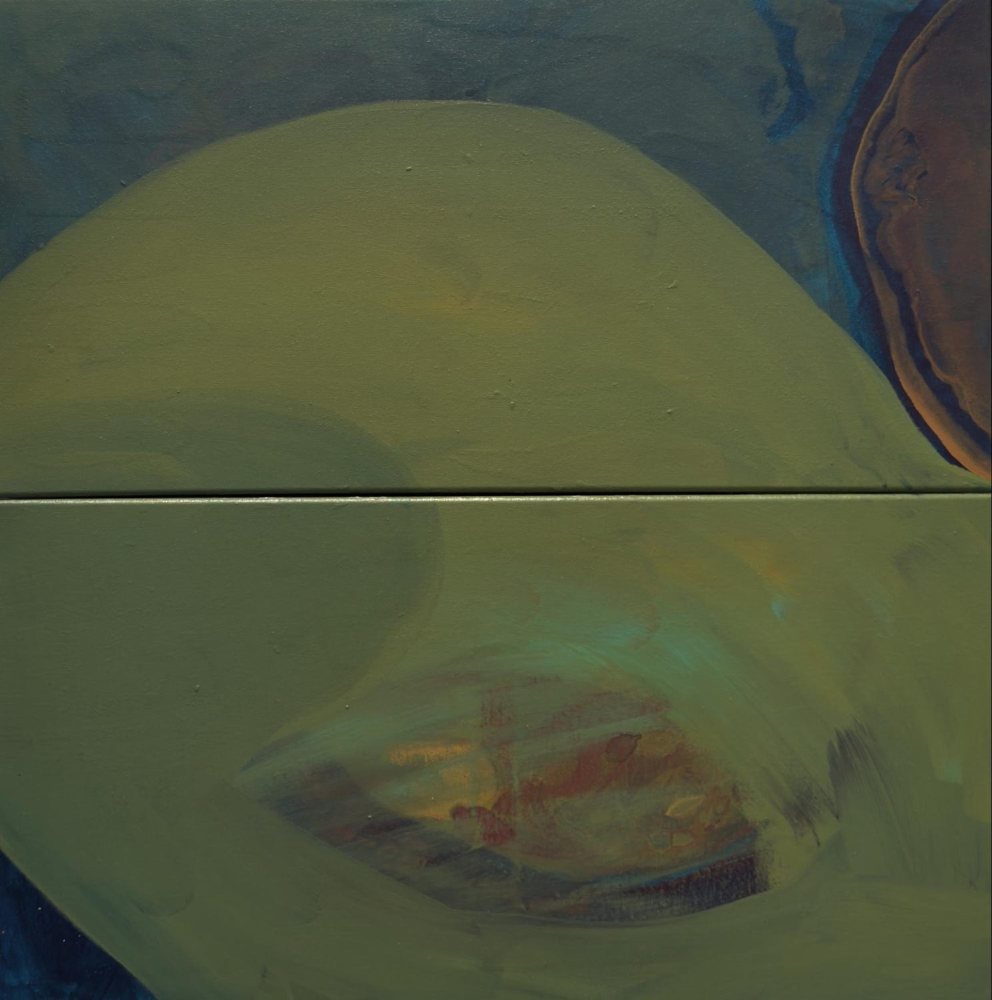
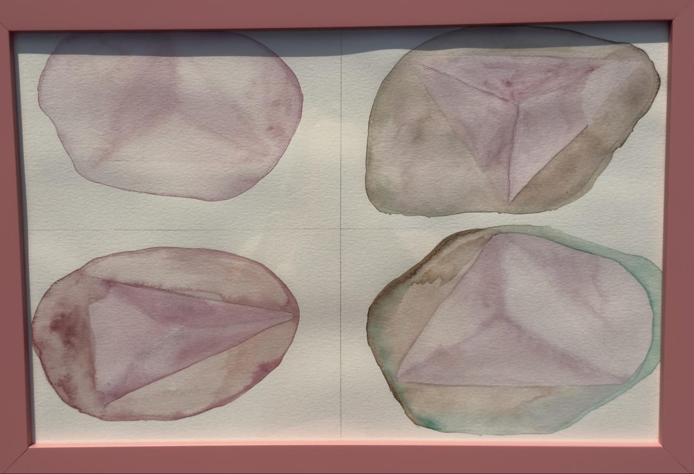

No. 1
Beverly Art Walk
An ongoing multidisciplinary art series
Artist Statement
#TheMatriarchyIsStrong is an ongoing multidisciplinary art series exploring matriarchy as a system of creation, care, resilience, and continuity.
In contemporary culture, power is often associated with hierarchy, dominance, visibility, and control. This body of work proposes an alternative framework. Here, matriarchy is not the inversion of patriarchy. It is the act of building.
Through layers of paint, collage, personal photographs, found objects, anatomical imagery, text, and symbolic materials, these works examine the invisible structures that sustain human life.
These become the architecture of the compositions.
Fragments coexist with abstraction, reflecting the reality that identity is assembled rather than fixed, inherited rather than isolated. NATURE AND NURTURE.
Many of the pieces draw from my own lived experience as a daughter, mother, wife, nurse/leader, and survivor. Born with a congenital heart defect, I have long been aware of both the fragility and persistence of the human body. The recurring images/imagery of hearts, pathways, lineage, and family photographs serve as a meditation on what it means to hold others while continuing to evolve oneself.
The visual language of the series is layered and unfinished. Soft fields of color, interrupted lines, archival images, and repeated structural forms suggest that healing and belonging are never static destinations but ongoing processes.
I am a work-in-progress.
I wake up every day with one goal… to keep getting better (in competition only with myself!)
The work embraces IMPERFECTION, REPAIR, and ADAPTATION as sources of strength rather than evidence of deficiency.
My professional life in oncology and stem cell transplant has profoundly influenced this perspective. After decades spent accompanying people through illness, uncertainty, loss, and recovery, I have come to understand that the most enduring forms of leadership are rarely rooted in authority. They are rooted in PRESENCE, STEADINESS, COMPASSION, and the CAPACITY to create conditions in which others thrive.
#TheMatriarchyIsStrong asks viewers to reconsider what strength looks like. It invites reflection on the people, relationships, and acts of care that quietly shape our lives. It suggests that the true infrastructure of humanity may not be found in institutions or systems, but in the countless acts of NURTURING, CONNECTION, COMMUNITY, and CREATION that occur every day. At its core, this work is an affirmation.
The work asks a simple question: What if the most powerful forces in human society are the ones that BUILD, BALANCE, NURTURE, and SUSTAIN?
Sara A. Houlihan
07/04/2026
Long Story Short
Long Story Short—#TheMatriarchyIsStrong is an ongoing, mixed-media series exploring matriarchy as a force of creation rather than domination.
Through abstraction, collage, personal archives, anatomical imagery, and symbolic materials, the work examines caregiving, family systems, healing, and resilience.
Drawing from my experiences as a nurse/leader, artist, mom, and person born with a broken heart, these pieces investigate the invisible and imperative structures that sustain human life. Rather than depicting power through hierarchy or control, the series proposes a vision of strength rooted in presence, connection, emotional intelligence, and the capacity to help others thrive.
The work asks a simple question: What if the most powerful forces in human society are the ones that build, balance, nurture, and sustain?
Sara A. Houlihan
07/04/2026
#TheMatriarchyIsStrong series — by Sara A. Houlihan

No. 1

No. 2

No. 3
Subtitle: The matriarchy welcomes you—we’re glad you are here (finally).

No. 3.5

No. 4

No. 5

No. 6

No. 7

No. 8
About the Artist
MA, BSN, BMT-CN
Artist, connector, coach, leader, nurse, and bioethicist
Sara was born in Lafayette, Indiana, and grew up in Plymouth, Indiana. She has called Chicago home for 26 years, and has spent nearly three decades of her career in oncology and stem cell transplant care.
She started as a bone marrow transplant nurse at University of Iowa Health Care in 1997, then moved to New York City in 1999 to work as a Clinical Nurse II at Memorial Sloan Kettering Cancer Center.
In 2000 she came to Chicago and joined Northwestern Memorial Hospital as a radiation nurse, then spent a decade as a nurse coordinator for stem cell transplant. From 2011 to 2023 she served as administrator of Northwestern Medicine’s Stem Cell Transplant Program, followed by two years as a nursing manager at UChicago Medicine. In 2025 she returned to Northwestern Medicine as a nurse leader.
Outside the hospital, Sara hosts conversations on the Nurse Mom Pod Squad podcast, available on Spotify.
Decades of walking with patients and families through illness, uncertainty, loss, and recovery shaped the belief at the heart of #TheMatriarchyIsStrong: that real strength lives in presence, care, and the people who build and sustain us.
For inquiries about the series, available works, or exhibitions, reach out to Sara directly.
houlihansara@gmail.com